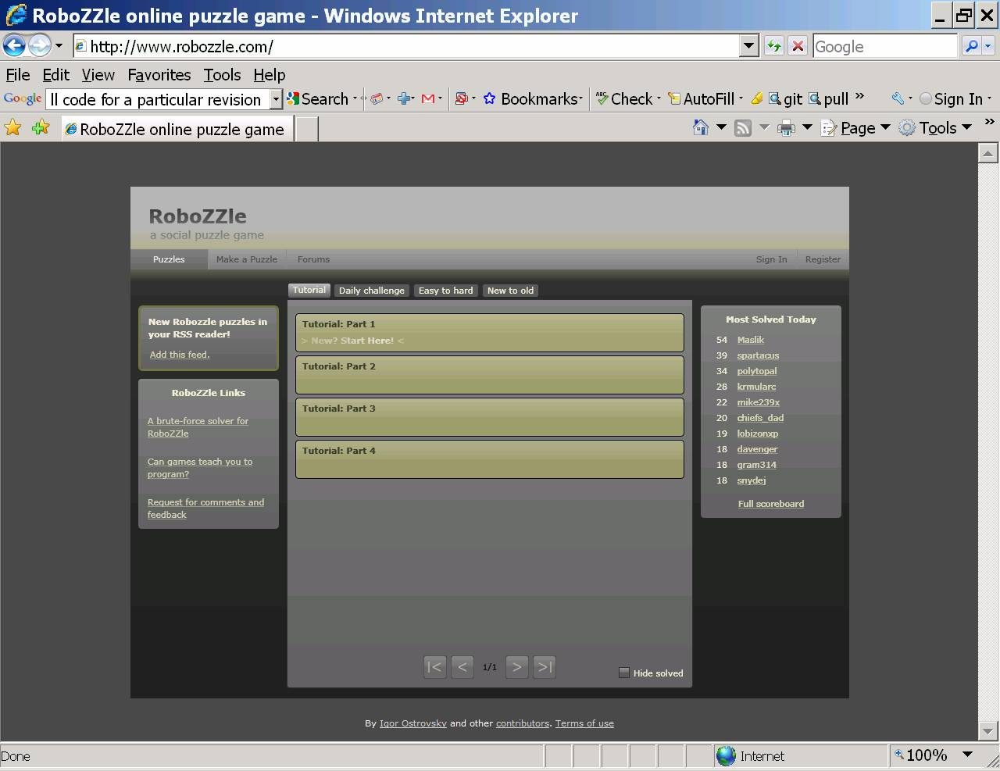
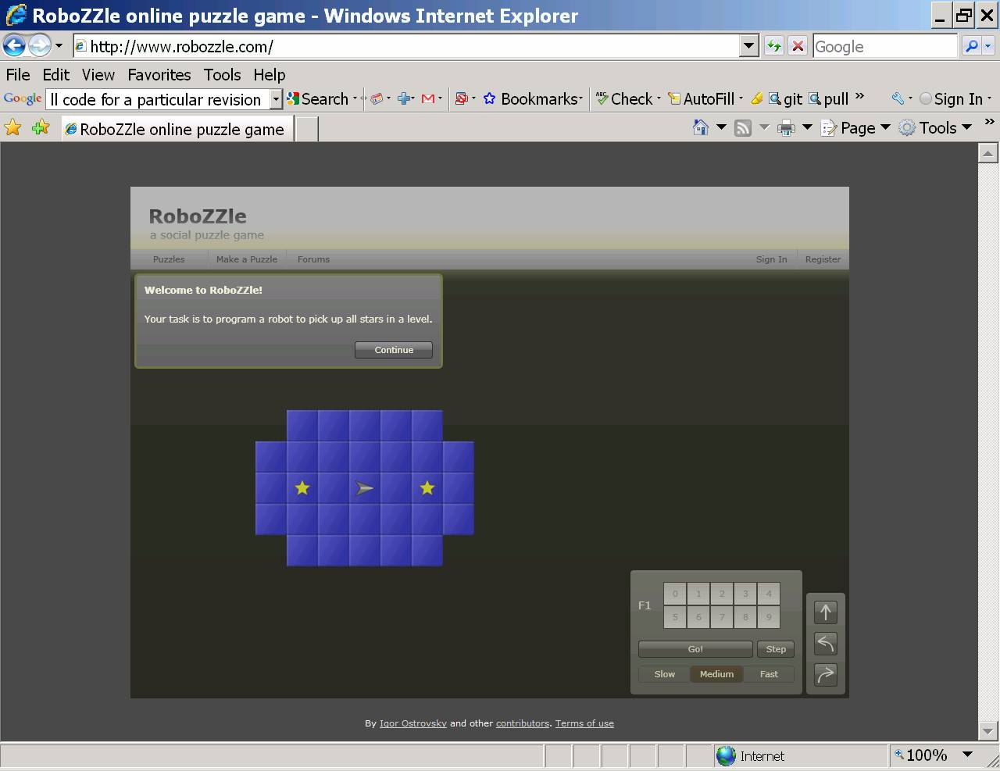
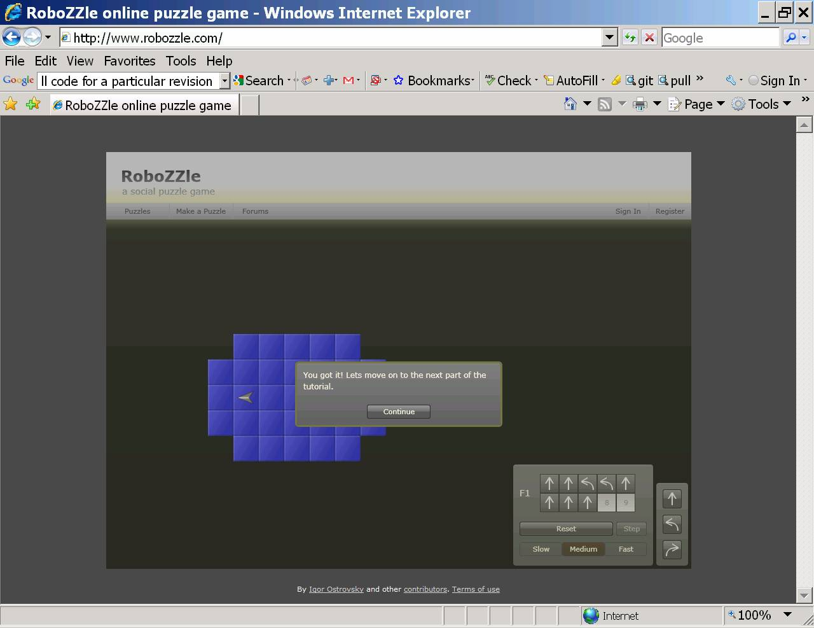
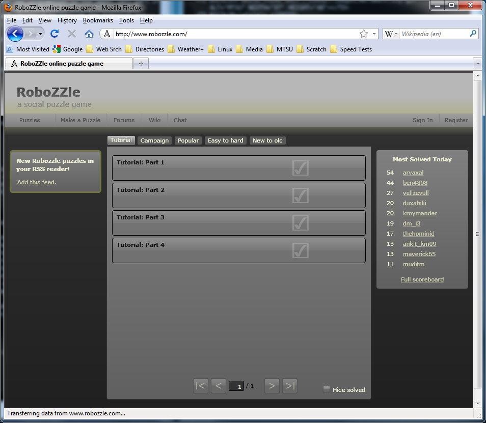

|
CSCI 2170 - Computer Science II
Lab Robozzle - A Puzzle Tool
|
EDUCATIONAL OBJECTIVE:
What follows is intended to smooth the learning process of some topics covered later in CSCI 2170. It is NOT intended to be fustrating or to stress you out :-)
In particular, if you just don't get Robozzle, don't fret. But do spend some
time on this lab exercise.
Software Requirements for this lab
In order to do this lab, you need a Microsoft Windows OS, IE or Mozilla, and Silverlight
installed. In some cases,Mozilla/Firefox may have trouble printing. In what
follows, if you have trouble printing using Mozilla/FireFox, then
please switch to IE.
For the YouTube video, you will also need sound for your computer.
The computers in KOM 360 should be able to play/display the youtube video, their
speakers typically have been disabled.
To hear the audio that describes what you are seeing, you will need to use headphones.
The YouTube video will also be played at the instructor's station as well.
Generally speaking, I think you will find it best to use the lab
computers for this lab.
Getting started
Sign onto one of the lab window computers using your class account and
corresponding password. Most likely you already have since you are reading
this lab :-)
We will NOT be using NX and ranger for this lab, i.e., do not log into ranger.
Bring up a new instance of the Internet Explorer (IE) or Mozilla browser
After bringing up your browser window, arrange the browser window that
you are using to display this lab text and the new browser
window on your desktop so they don't overlap.
Remember that you can resize a window by placing the mouse over the
top or side window edge, then click the left mouse button, hold and drag.
You can make any window active by clicking the mouse on it.
Access the Robozzle YouTube Video
For the most part the YouTube video you are about to watch shows the full features of
Robozzle, i.e., since we are NOT experts in Robozzle some of the video will show
some things far beyond what we will learn. So don't be overwhelmed!
To access the YouTube video, copy and paste the following URL into your browser.
http://igoro.com/archive/my-youtube-debut-a-robozzle-demo-video/
Scroll down the browser window to you see the video screen; play the video.
Remember you can pause the video as you desire, rewind, etc. The key information you
should grasp from the video is how to drag commands from a template to create a
Robozzle program. Again, most of the puzzles found in this video are extremely
complicated and beyond what we will do!
Access the Robozzle Web site
Re-use the YouTube browser instance to bring up the web site http://www.robozzle.com
Just copy and paste the URL over to your browser URL window. If Silverlight is installed, then the following should appear in your browser window.

Now click on Tutorial Part 1. The following window should appear.

Continue with the tutorial, i.e., read the information in the upper left part of
the screen, click continue and proceed. As you move through the tutorial and
have questions, please ask. The goal in this puzzle is to have the robot move forward
two times, then turn around and move four times. As the robot moves over a star, the
star will disappear. Give it a try.
Once you complete the first tutorial successfully the following screen
should appear.

There are four different tutorials. You just finished the first one. Now click on the continue link, the second tutorial will start.
Please complete all four parts of the tutorial. When you are done with all four parts, use the tab labeled Tutorial to return you to the four part tutorial overview page. All four parts of the tutorial should now have a check mark on them indicating you have completed each of them successfully; your screen should look something like this:

Use the browser print (see File menu) to print the screen (with all the check marks). Write you name on the printed page and give to the lab instructor.
Remember, if you have trouble printing, ask the lab assistant for help.
Again be sure to write you name on the printed page
and give to the lab assistant before you leave lab today.
Congratulations! You have finished Lab Robozzle.